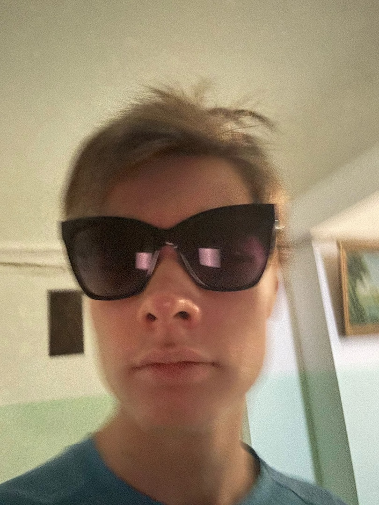
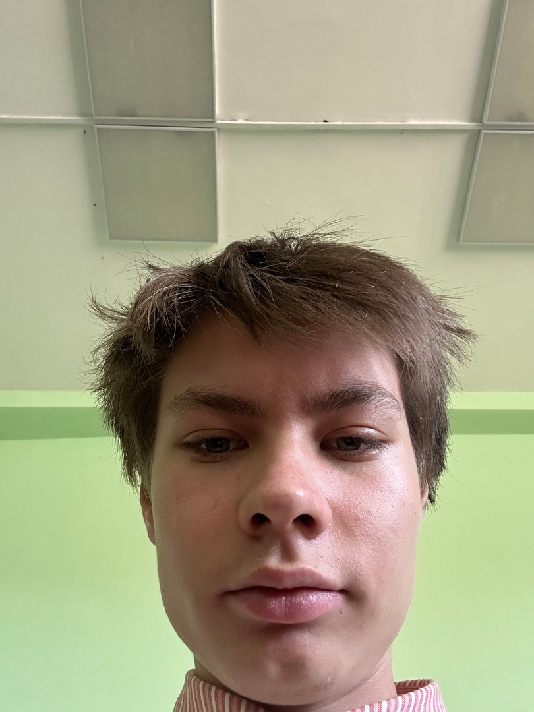
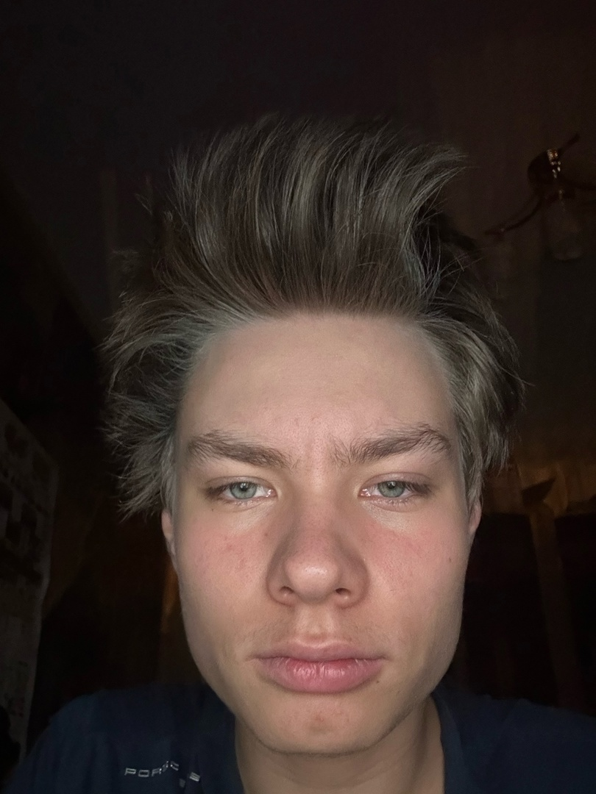

Гули-это не те, что дед инсайды, а гули гули арам зам зам

В жизни есть 2 дороги:одна легкая, а другая по которой я иду
Запомни, одна ошибка и ты ошибся

Если тебе где то не рады в рваных носках, то и в целых идти не стоит
Ставь лайк и найдешь айфон под подушкой
Многие жалуются на свою внешность, но ни никто не жалуется на свои мозги
Шаг влево, шаг вправо - два шага
Самое важное - это семья, нельзя отворачиваться от семьи даже если она отвернулась от тебя.